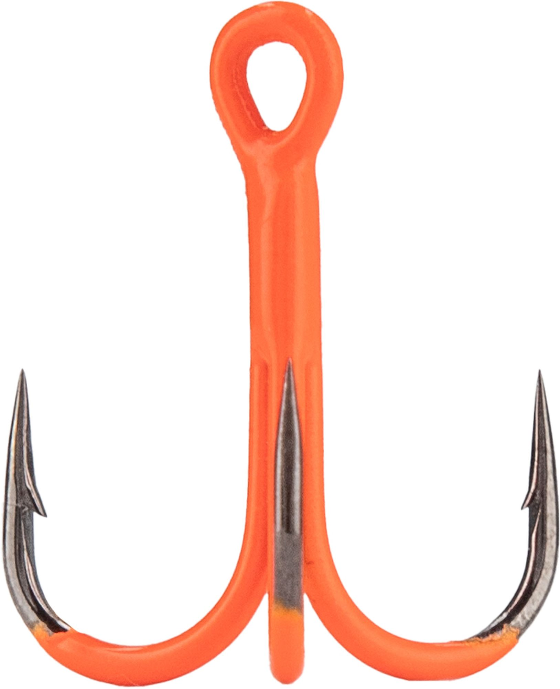
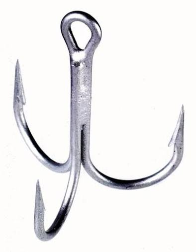

Zdefiniowanie kotwicy w konkretnym miejscu dokumentu HTML
i wskazanie tej kotwicy w linku do tego dokumentu,
spowoduje po jego otwarciu przewinięcie,
tak aby wiersz zawierający kotwicę znajdował się jak najbliżej
górnej krawędzi okna przeglądarki.
Aby było co przewijać, dodamy dwa rysunki kotwic oraz linie puste,
a następnie zdefiniujemy dwie kotwice.
To jest link do kotwicy górnej
